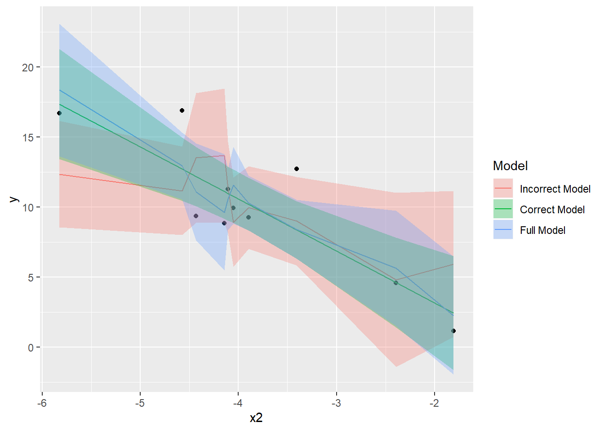
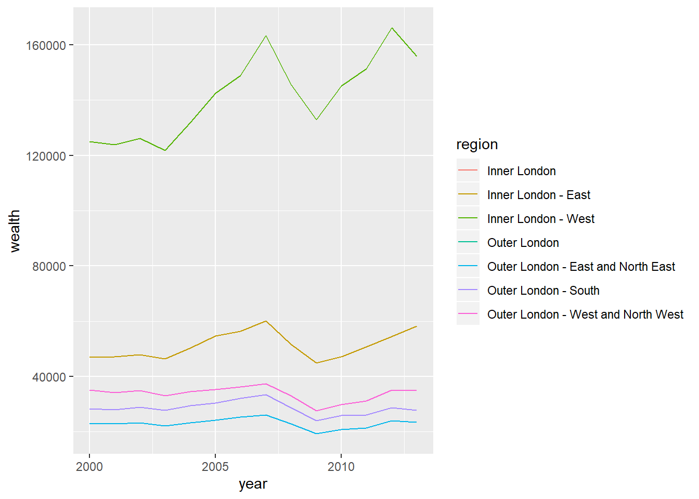

Chapter 3 Merging, re-shaping, and regular expressions
3.1 Seminar
In this part of the course, we will merge data sets again. The difference to the previous exercise is that both data sets contain the same observations but different variables (columns) which is the more common case. We explain how re-shaping data works with a small “toy” example which should make the procedure more clear. Re-shaping is very often necessary for producing ggplot graphs. Finally, we will introduce a simple regular expression example. Regular expressions are extremely useful to identifying similar content that is not exactly identical.
3.1.1 Merging
We start by loading the eu data set again.
We now create a subset of the data set that only includes the variables year, country, region, wealth, quality.of.government. We also filter by France, Germany, and the UK, and the years 2000 – 2013. Furthermore, we must also filter out the observations within a country that are the country itself. Then, we save the data set as eu_subset1.csv.
library(tidyverse)
# copy, rename, select, filter, save
eu_subset12 <- eu %>%
dplyr::select(year,
country = NUTS0,
region = region_name,
wealth = econ_2gdp_eur_hab,
quality.of.government = eqi_eqi) %>%
filter(country %in% c("FR", "DE", "UK") & year > 1999 & year < 2014 &
!(region %in% c("DEUTSCHLAND ", "FRANCE", "UNITED KINGDOM"))) %>%
write.table(file = "eu_subset1.csv", sep = ",",
row.names = FALSE, col.names = TRUE) Let us create another subset of the original data set. It will include the same countries plus the Netherlands and Belgium but on the aggregate level, i.e. it is not the regional level. Furthermore, there will be an additional variable which is the total population size but it will exclude wealth and the quality of government.
eu_subset2 <- eu %>%
dplyr::select(
year,
country = NUTS0,
population = demo_d2jan_t) %>%
filter(country %in% c("FR", "DE", "UK") & year > 1999 & year < 2014) %>%
group_by(country, year) %>%
summarize(population = sum(population, na.rm = TRUE)) %>%
write.table(file = "eu_subset2.csv", sep = ",",
row.names = FALSE, col.names = TRUE)Note that we needed to use the sum() function in summarize rather than mean() when we wanted average wealth or average quality of government. The population variable is the sum of the regional populations in a given year and country. To demonstrate merging, we now clear our workspace.
We load the two data sets we created and inspect them. We do this to understand what will happen in merging.
eu1 <- read.csv(file = "eu_subset1.csv", sep = ",", stringsAsFactors = FALSE)
eu2 <- read.csv(file = "eu_subset2.csv", sep = ",", stringsAsFactors = FALSE)We start by printing the first 30 observations of the eu1 data set.
year country region wealth quality.of.government
1 2000 DE BADEN-WÃœRTTEMBERG 29700 NA
2 2001 DE BADEN-WÃœRTTEMBERG 30900 NA
3 2002 DE BADEN-WÃœRTTEMBERG 31000 NA
4 2003 DE BADEN-WÃœRTTEMBERG 31100 NA
5 2004 DE BADEN-WÃœRTTEMBERG 31400 NA
6 2005 DE BADEN-WÃœRTTEMBERG 31700 NA
7 2006 DE BADEN-WÃœRTTEMBERG 33700 NA
8 2007 DE BADEN-WÃœRTTEMBERG 35600 NA
9 2008 DE BADEN-WÃœRTTEMBERG 36000 NA
10 2009 DE BADEN-WÃœRTTEMBERG 33600 NA
11 2010 DE BADEN-WÃœRTTEMBERG 36400 1.010530
12 2011 DE BADEN-WÃœRTTEMBERG 38700 NA
13 2012 DE BADEN-WÃœRTTEMBERG 39200 NA
14 2013 DE BADEN-WÃœRTTEMBERG 39900 0.980281
15 2000 DE Stuttgart 33300 NA
16 2001 DE Stuttgart 35000 NA
17 2002 DE Stuttgart 34800 NA
18 2003 DE Stuttgart 35200 NA
19 2004 DE Stuttgart 35200 NA
20 2005 DE Stuttgart 35100 NA
21 2006 DE Stuttgart 37700 NA
22 2007 DE Stuttgart 40200 NA
23 2008 DE Stuttgart 39800 NA
24 2009 DE Stuttgart 36600 NA
25 2010 DE Stuttgart 40500 NA
26 2011 DE Stuttgart 43000 NA
27 2012 DE Stuttgart 43900 NA
28 2013 DE Stuttgart 44700 NA
29 2000 DE Karlsruhe 29600 NA
30 2001 DE Karlsruhe 30600 NAIt is clear that the data set is on the region-year level. Let us inspect the second data set in the same way. We print the entire data set because it is much smaller.
country year population
1 DE 2000 243755442
2 DE 2001 244065601
3 DE 2002 244632480
4 DE 2003 244944119
5 DE 2004 244947919
6 DE 2005 244873939
7 DE 2006 244702713
8 DE 2007 244352058
9 DE 2008 244080027
10 DE 2009 243452378
11 DE 2010 242869525
12 DE 2011 245254806
13 DE 2012 245531229
14 DE 2013 246061734
15 FR 2000 178261418
16 FR 2001 179512459
17 FR 2002 180795834
18 FR 2003 182067770
19 FR 2004 183303083
20 FR 2005 184699398
21 FR 2006 186029101
22 FR 2007 187235541
23 FR 2008 188276925
24 FR 2009 189281644
25 FR 2010 190189326
26 FR 2011 191119409
27 FR 2012 192028925
28 FR 2013 194898565
29 UK 2000 166803394
30 UK 2001 167366218
31 UK 2002 170368601
32 UK 2003 171117914
33 UK 2004 171966941
34 UK 2005 173069726
35 UK 2006 174302125
36 UK 2007 175573637
37 UK 2008 176961583
38 UK 2009 178249105
39 UK 2010 179527970
40 UK 2011 180934071
41 UK 2012 182228946
42 UK 2013 183352914This data set is on the country-year level. Let’s say we want to merge the second data set to the first data set. The second data set includes the variable population which will be added to the new combinded data set but the observations are one the country-year level. Therefore, all regions in a country-year will get the same population value (which is the population of the entire country). Because the second data set is more aggregated, we cannot get the population on a more dis-aggregated level but we can still combine both data sets. We do so with the merge() function
[1] 2324 6So, the new data set has the same amount of observations as the bigger one but if we check the population variable, it is the same value for all regions within a country-year.
3.1.2 Re-shaping
Re-shaping a data set is useful, for instance for plotting graphs. For example, have a dependent variable, we an independent variable, and we have different model predictions. Let us create some a small data set with 10 observations and two correlated independent variables.
Attaching package: 'MASS'The following object is masked from 'package:dplyr':
selectset.seed(123)
# 2 correlated variables
X <- mvrnorm(n = 10, mu = c(12, -4), Sigma = matrix(data = c(1, 0.8, 0.8, 1), nrow = 2, ncol = 2))
X <- data.frame(x1 = X[,1], x2 = X[,2])
X x1 x2
1 11.08120 -4.144625
2 11.66785 -4.104582
3 13.35199 -2.394544
4 12.03189 -3.898109
5 12.29843 -4.053119
6 13.06198 -1.807875
7 12.27983 -3.405302
8 11.42176 -5.822041
9 11.12661 -4.429818
10 11.72672 -4.572302Now that we have the two independent variables, let’s create the outcome variable as a linear function of x2 and some random noise.
With this done, we run three linear models. The first includes x1 only, the second x2 only and the third both x1 and x2. We then make prediction of y including confidence intervals for all three models and attach them to the data set.
# regressions
m1 <- glm(y ~ x1, family = "gaussian", data = X)
m2 <- glm(y ~ x2, family = "gaussian", data = X)
m3 <- glm(y ~ x1 + x2, family = "gaussian", data = X)
# predictions
preds1 <- predict(m1, se.fit = TRUE)
preds2 <- predict(m2, se.fit = TRUE)
preds3 <- predict(m3, se.fit = TRUE)
# attach point estimates
X$bestguess1 <- preds1$fit
X$bestguess2 <- preds2$fit
X$bestguess3 <- preds3$fit
# attach lower and upper bounds of the 95% CI from a t with the appropriate degrees of freedom
X$lowerbound1 <- preds1$fit - qt(p = 0.975, df = m1$df.residual) * preds1$se.fit
X$lowerbound2 <- preds2$fit - qt(p = 0.975, df = m2$df.residual) * preds2$se.fit
X$lowerbound3 <- preds3$fit - qt(p = 0.975, df = m3$df.residual) * preds3$se.fit
X$upperbound1 <- preds1$fit + qt(p = 0.975, df = m1$df.residual) * preds1$se.fit
X$upperbound2 <- preds2$fit + qt(p = 0.975, df = m2$df.residual) * preds2$se.fit
X$upperbound3 <- preds3$fit + qt(p = 0.975, df = m3$df.residual) * preds3$se.fit
# print data set
X x1 x2 y bestguess1 bestguess2 bestguess3
1 11.08120 -4.144625 8.858092 13.699237 11.130489 9.641748
2 11.66785 -4.104582 11.307531 11.403226 10.981629 10.589413
3 13.35199 -2.394544 4.608348 4.811964 4.624524 5.644261
4 12.03189 -3.898109 9.258599 9.978477 10.214059 10.304613
5 12.29843 -4.053119 9.957680 8.935323 10.790314 11.567548
6 13.06198 -1.807875 1.159607 5.946962 2.443567 2.261255
7 12.27983 -3.405302 12.726617 9.008104 8.382040 8.418132
8 11.42176 -5.822041 16.715223 12.366378 17.366322 18.364911
9 11.12661 -4.429818 9.360133 13.521520 12.190699 11.100571
10 11.72672 -4.572302 16.892199 11.172839 12.720387 12.951578
lowerbound1 lowerbound2 lowerbound3 upperbound1 upperbound2 upperbound3
1 8.9231907 9.185198 5.493225 18.47528 13.075781 13.79027
2 8.1521159 9.053073 8.385503 14.65434 12.910186 12.79332
3 -1.4113612 1.427737 1.518502 11.03529 7.821311 9.77002
4 7.0285045 8.331855 8.354573 12.92845 12.096264 12.25465
5 5.7545940 8.879660 8.835127 12.11605 12.700968 14.29997
6 0.7326925 -1.633502 -1.959061 11.16123 6.520636 6.48157
7 5.8550072 6.335486 6.309639 12.16120 10.428593 10.52662
8 8.5825423 13.439212 13.644692 16.15021 21.293433 23.08513
9 8.8894214 10.061580 7.653651 18.15362 14.319817 14.54749
10 8.0152435 10.462938 10.560320 14.33043 14.977835 15.34284The data set is in the common format for analysis. However, if we want to plot the predictions in ggplot and differentiate them with color by model, we have to re-shape the data set into a long format. In long format, we want to have a new variable called model which takes on the values “model 1”, “model 2”, “model 3” corresponding to the respective model that made the prediction of a best guess, lower or upper bound. We make the data set three times as long by combining bestguess1, bestguess2, and bestguess3 into one bestguess variable. We do the same with the upper and lower bounds. The variables x1, x2, and y are so called “id” variables because we just recycle the values that are already there, i.e. nothing is combined here. We use the reshape() function.
Have a look at the argument’s meaning in the help window (usually at lower right in RStudio) by running ?reshape.
eu.long <- reshape(data = X, varying = c("bestguess1", "lowerbound1", "upperbound1",
"bestguess2", "lowerbound2", "upperbound2",
"bestguess3", "lowerbound3", "upperbound3"),
timevar = "Model",
times = c(1,2,3),
v.names = c("bestguess","lowerbound","upperbound"),
idvar = c("x1","x2", "y"),
direction = "long")
# change the row.names which are always combinations of the idvars
row.names(eu.long) <- seq(1:nrow(eu.long))
# inspect data set
eu.long x1 x2 y Model bestguess lowerbound upperbound
1 11.08120 -4.144625 8.858092 1 13.699237 8.9231907 18.475283
2 11.66785 -4.104582 11.307531 1 11.403226 8.1521159 14.654337
3 13.35199 -2.394544 4.608348 1 4.811964 -1.4113612 11.035289
4 12.03189 -3.898109 9.258599 1 9.978477 7.0285045 12.928450
5 12.29843 -4.053119 9.957680 1 8.935323 5.7545940 12.116053
6 13.06198 -1.807875 1.159607 1 5.946962 0.7326925 11.161232
7 12.27983 -3.405302 12.726617 1 9.008104 5.8550072 12.161200
8 11.42176 -5.822041 16.715223 1 12.366378 8.5825423 16.150213
9 11.12661 -4.429818 9.360133 1 13.521520 8.8894214 18.153618
10 11.72672 -4.572302 16.892199 1 11.172839 8.0152435 14.330434
11 11.08120 -4.144625 8.858092 2 11.130489 9.1851978 13.075781
12 11.66785 -4.104582 11.307531 2 10.981629 9.0530726 12.910186
13 13.35199 -2.394544 4.608348 2 4.624524 1.4277367 7.821311
14 12.03189 -3.898109 9.258599 2 10.214059 8.3318549 12.096264
15 12.29843 -4.053119 9.957680 2 10.790314 8.8796601 12.700968
16 13.06198 -1.807875 1.159607 2 2.443567 -1.6335023 6.520636
17 12.27983 -3.405302 12.726617 2 8.382040 6.3354862 10.428593
18 11.42176 -5.822041 16.715223 2 17.366322 13.4392116 21.293433
19 11.12661 -4.429818 9.360133 2 12.190699 10.0615797 14.319817
20 11.72672 -4.572302 16.892199 2 12.720387 10.4629384 14.977835
21 11.08120 -4.144625 8.858092 3 9.641748 5.4932253 13.790271
22 11.66785 -4.104582 11.307531 3 10.589413 8.3855035 12.793322
23 13.35199 -2.394544 4.608348 3 5.644261 1.5185017 9.770020
24 12.03189 -3.898109 9.258599 3 10.304613 8.3545732 12.254654
25 12.29843 -4.053119 9.957680 3 11.567548 8.8351269 14.299969
26 13.06198 -1.807875 1.159607 3 2.261255 -1.9590606 6.481570
27 12.27983 -3.405302 12.726617 3 8.418132 6.3096388 10.526625
28 11.42176 -5.822041 16.715223 3 18.364911 13.6446922 23.085130
29 11.12661 -4.429818 9.360133 3 11.100571 7.6536509 14.547492
30 11.72672 -4.572302 16.892199 3 12.951578 10.5603200 15.342836Ee turn the variable model into a factor variable.
eu.long$Model <- factor(eu.long$Model, levels = c(1,2,3), labels = c("Incorrect Model", "Correct Model", "Full Model"))
table(eu.long$Model)
Incorrect Model Correct Model Full Model
10 10 10 We plot using ggplot.
ggplot(eu.long, aes(x = x2, y = y)) +
geom_point() +
geom_line( aes(y = bestguess, color = Model)) +
geom_ribbon( aes(ymin = lowerbound, ymax = upperbound, fill = Model), alpha = 0.3)
We see that the all model predictions overlap. The incorrect model does worst and also has the largest amount of uncertainty. While it is hard to see, the correct model is closest to the real predictions and has the smallest uncertainty. Go ahead and plot the size of the residuals on your own.
3.1.3 Regular expression
Regular expressions are difficult to master but very powerful when it comes to working with data. Regular expressions can be used to extract email addresses, phone numbers, country names and much more. We provide a simple example and invite you to search online for more complex tasks.
We examine the eu data set and the regions in the UK.
[1] "NORTH EAST (ENGLAND)"
[2] "Tees Valley and Durham"
[3] "Northumberland and Tyne and Wear"
[4] "NORTH WEST (ENGLAND)"
[5] "Cumbria"
[6] "Cheshire"
[7] "Greater Manchester"
[8] "Lancashire"
[9] "Merseyside"
[10] "YORKSHIRE AND THE HUMBER"
[11] "East Yorkshire and Northern Lincolnshire"
[12] "North Yorkshire"
[13] "South Yorkshire"
[14] "West Yorkshire"
[15] "EAST MIDLANDS (ENGLAND)"
[16] "Derbyshire and Nottinghamshire"
[17] "Leicestershire, Rutland and Northamptonshire"
[18] "Lincolnshire"
[19] "WEST MIDLANDS (ENGLAND)"
[20] "Herefordshire, Worcestershire and Warwickshire"
[21] "Shropshire and Staffordshire"
[22] "West Midlands"
[23] "EAST OF ENGLAND"
[24] "East Anglia"
[25] "Bedfordshire and Hertfordshire"
[26] "Essex"
[27] "LONDON"
[28] "Inner London"
[29] "Outer London"
[30] "Inner London - West"
[31] "Inner London - East"
[32] "Outer London - East and North East"
[33] "Outer London - South"
[34] "Outer London - West and North West"
[35] "SOUTH EAST (ENGLAND)"
[36] "Berkshire, Buckinghamshire and Oxfordshire"
[37] "Surrey, East and West Sussex"
[38] "Hampshire and Isle of Wight"
[39] "Kent"
[40] "SOUTH WEST (ENGLAND)"
[41] "Gloucestershire, Wiltshire and Bristol/Bath area"
[42] "Dorset and Somerset"
[43] "Cornwall and Isles of Scilly"
[44] "Devon"
[45] "WALES"
[46] "West Wales and The Valleys"
[47] "East Wales"
[48] "SCOTLAND"
[49] "North Eastern Scotland"
[50] "Eastern Scotland"
[51] "South Western Scotland"
[52] "Highlands and Islands"
[53] "NORTHERN IRELAND"
[54] "Northern Ireland"
[55] "EXTRA-REGIO NUTS 1"
[56] "Extra-Regio NUTS 2" There are multiple regions of London in the data set. Say we wanted to aggregate wealth for all the London regions but we did not want to pick out the regions by hand. This is what regular expressions excel at. We use the grep() function which returns the row numbers of all London districts. Let’s subset the data set to London only and then compare the wealth of London regions over time in a plot.
[1] 1877 1878 1879 1880 1881 1882 1883 1884 1885 1886 1887 1888 1889 1890
[15] 1891 1892 1893 1894 1895 1896 1897 1898 1899 1900 1901 1902 1903 1904
[29] 1905 1906 1907 1908 1909 1910 1911 1912 1913 1914 1915 1916 1917 1918
[43] 1919 1920 1921 1922 1923 1924 1925 1926 1927 1928 1929 1930 1931 1932
[57] 1933 1934 1935 1936 1937 1938 1939 1940 1941 1942 1943 1944 1945 1946
[71] 1947 1948 1949 1950 1951 1952 1953 1954 1955 1956 1957 1958 1959 1960
[85] 1961 1962 1963 1964 1965 1966 1967 1968 1969 1970 1971 1972 1973 1974
[99] 1975 1976 1977 1978 1979 1980 1981 1982 1983 1984 1985 1986 1987 1988london <- eu1 %>%
slice( grep(pattern = "London", x = eu1$region, ignore.case = TRUE) ) %>%
filter( region != "LONDON" )
ggplot(london, aes(x = year, y = wealth)) +
geom_line( aes(y = wealth, color = region)) Warning: Removed 28 rows containing missing values (geom_path).
It seems like Inner London - West is the place to be.